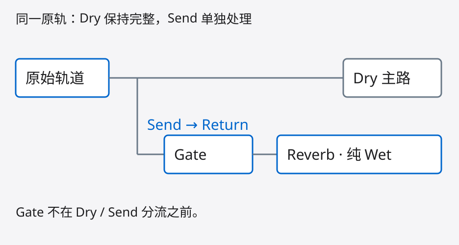
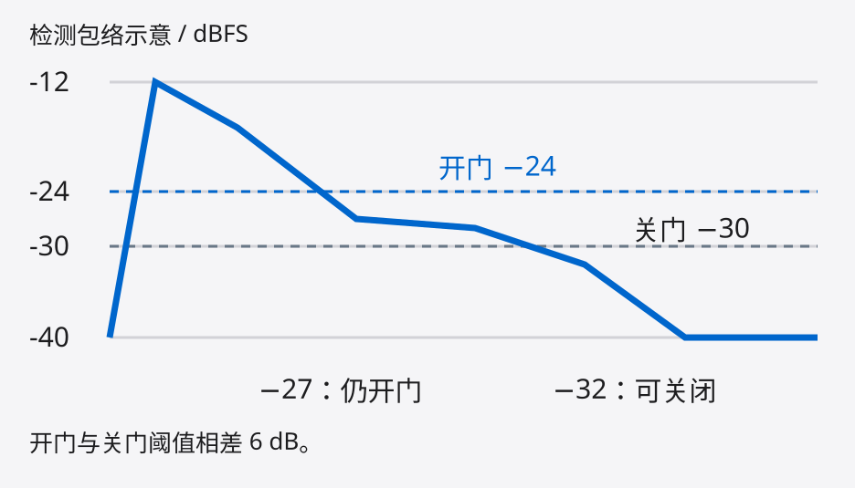
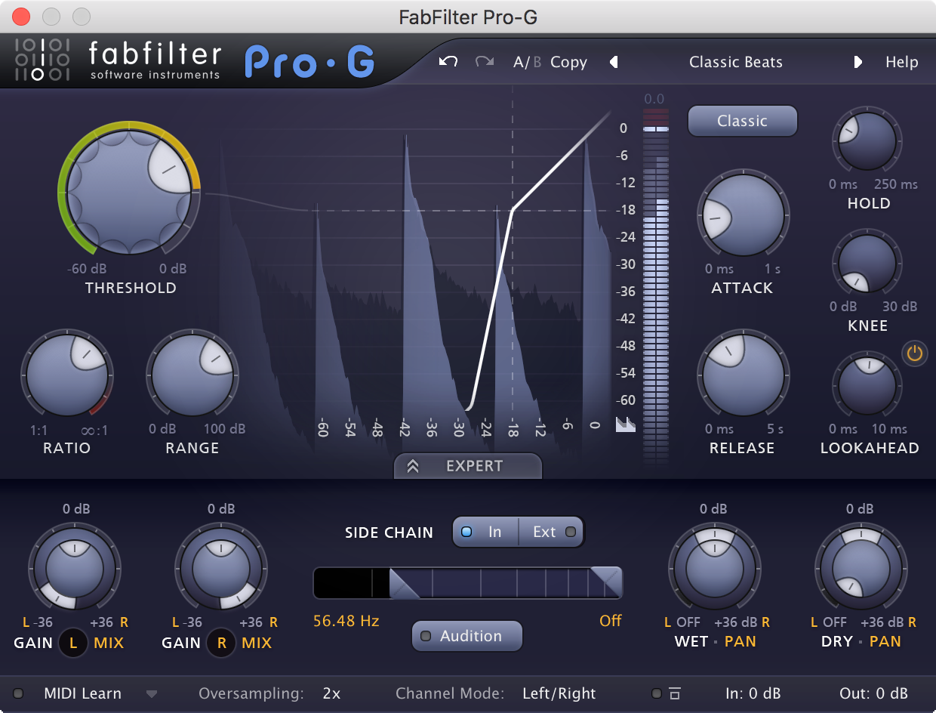
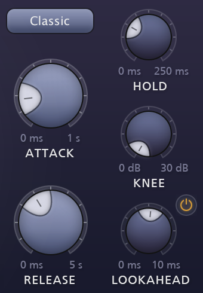
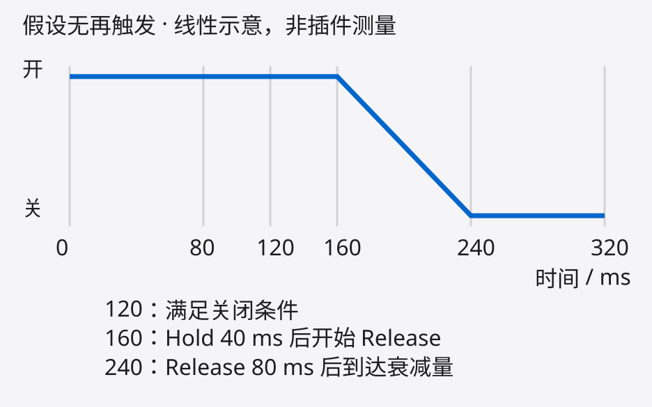

串音、底噪、不需要的源尾音，
可能一直在激励混响。

让值得进入空间的声音通过，
再让混响自然衰减。
需要独立判断时，用专属 Return。共享返回上的 Gate 会受所有送入声源共同影响。
先问：要控制谁进入，还是何时结束？
筛选送入混响的内容。
已建立的尾音仍可继续衰减。
处理已经产生的混响声。
可以做明显截尾的 gated reverb。
如果把 Gate 放在 Dry / Send 分流之前，
原声也会一起改变。两条链不能等同。
Hysteresis：开门与关门用不同阈值。
假设 Gate 已被强事件打开；以下为下降过程。

低于开门阈值，
但仍保持开启。
低于关门阈值，
满足关闭条件。
这是门限逻辑示例，不是通用预设。Pro-G 的 hysteresis 按风格内建，没有独立旋钮。
FabFilter Pro-G 官方媒体图 · 文件日期 2015
具体软件版本未注明；图中参数不是本文设置。

决定何时开门、
最多衰减多少。
决定开门响应、
保持与关闭过程。
© FabFilter · 官方媒体图，有限教学评论使用。
版权保留；不是自由素材。

真实控件局部 © FabFilter
裁切自上一页官方图。
Attack 太慢可能漏起音；
过快也可能产生点击。
下面是假设门限器时序，不预测 Pro-G 包络。

Hold 计时定义依产品；Pro-G 的时间行为也受音频内容影响。先保住事件，再收余下输入。
假设信号恰好处于最大衰减状态：
输入电平
dBFS
最大衰减
dB
输出电平
dBFS
有效弱音与串音电平重叠时，
继续抬高 Threshold 也难可靠分开。
改变判断信号，
不等于修改音色。
实际进入混响的
音频路径。
替代办法：外部 Sidechain、Send automation
或手工编辑。先选对事件，再决定衰减量。
保住弱音、起音与需要的尾段。
气息、弦乐延音、鬼音可能是表达，
不要一起当成噪声去掉。
听尾部是否连贯，噪声是否
仍在持续激励空间。
尽量匹配主观响度，再 A/B。
Wet 变小，不自动等于更清楚。
入口已收住，尾巴仍太长？
→ 检查 Reverb 的衰减。
需要让 Wet 在指定时刻结束？
→ 后级 Gate 或自动化。
先选择进入空间的声音，
再听混响怎样衰减。
@misc{wang2026musicmixingsecrets,
author = {Kangdi, Wang},
title = {Music Mixing Secrets},
year = {2026},
url = {https://github.com/DDDPG/}
# {music-mixing-secrets}
}FabFilter Pro-G 官方帮助与媒体包
Ableton Live 12 · Gate 手册
原创数值示例，非实测。截图 © FabFilter，
有限教学评论使用；源码许可不涵盖截图。